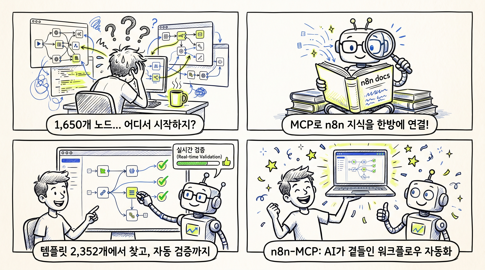
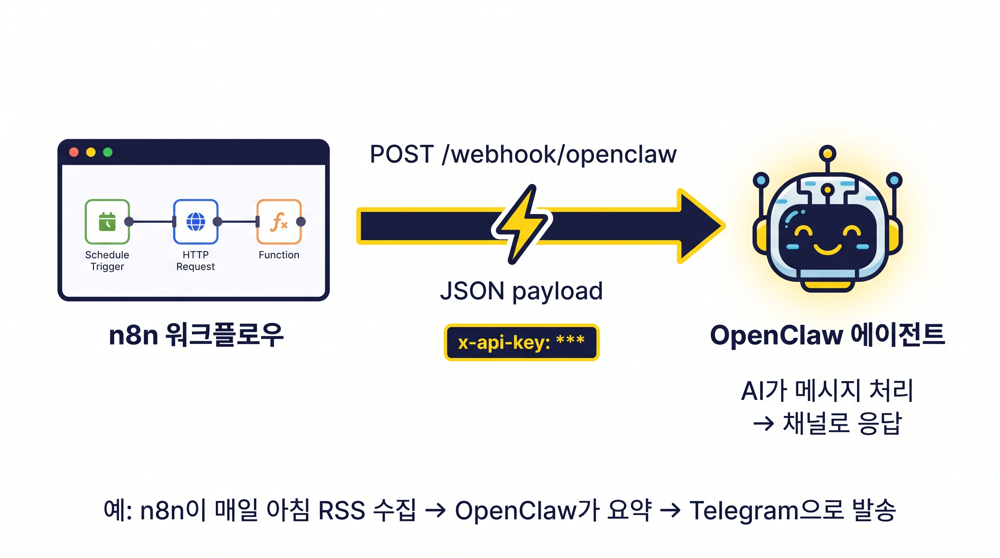
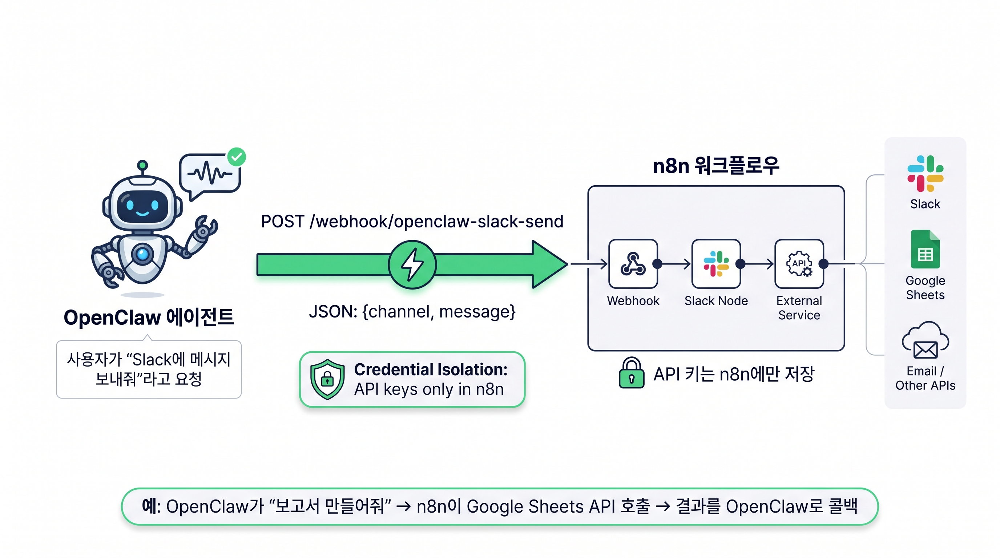

1,650개 노드, 어디서 시작해야 할까
n8n은 오픈소스 워크플로우 자동화 도구다. Slack 메시지를 받아 Google Sheets에 기록하고, webhook으로 외부 API를 호출하고, AI 에이전트를 돌려 이메일을 자동 분류한다. 할 수 있는 일은 무한한데, 문제는 하나다.
노드가 너무 많다.
핵심 노드 820개, 커뮤니티 노드 830개. 합치면 1,650개다. 각 노드마다 속성이 있고, 오퍼레이션이 있고, 필수 파라미터가 있다. “Slack에 메시지 보내기” 하나만 해도 resource, operation, select, channelId, text를 다 설정해야 한다. 디폴트 값을 믿었다간 런타임 에러가 터진다.
그래서 등장한 게 n8n-MCP다.
n8n-MCP가 뭔가
n8n-MCP는 Model Context Protocol(MCP) 서버다. AI 모델(Claude, Cursor, Windsurf 등)이 n8n의 모든 노드 문서, 속성, 오퍼레이션, 템플릿을 실시간으로 조회할 수 있게 해준다.
간단히 말해:
AI에게 “n8n으로 Slack→Google Sheets 워크플로우 만들어줘”라고 말하면, AI가 n8n-MCP를 통해 정확한 노드 설정값을 찾아서, 검증까지 거쳐서 완성된 워크플로우 JSON을 내어준다.
숫자로 보는 규모
| 항목 | 수치 |
|---|---|
| n8n 노드 | 1,650개 (코어 820 + 커뮤니티 830) |
| 노드 속성 커버리지 | 99% |
| 오퍼레이션 커버리지 | 63.6% |
| 공식 문서 커버리지 | 87% |
| AI 툴 변형 | 265개 |
| 실전 예시 | 156개 (템플릿에서 추출) |
| 워크플로우 템플릿 | 2,352개 |
| 테스트 | 5,418개 통과 |
어떻게 작동하나
핵심 도구 7개
search_nodes— 노드 전문 검색.includeExamples: true로 실제 설정값까지 가져온다get_node— 특정 노드의 상세 정보. 문서 모드, 속성 검색 모드, 버전 비교 모드 지원validate_node— 노드 설정값 검증. 최소 검사(<100ms)와 전체 검사 지원validate_workflow— 워크플로우 전체 검증. 연결, 표현식, AI 에이전트까지search_templates— 2,352개 템플릿 검색. 키워드, 노드 타입, 태스크, 메타데이터 필터get_template— 템플릿 전체 JSON 가져오기tools_documentation— 각 MCP 툴의 사용법 문서
n8n 관리 도구 13개 (API 연동 시)
n8n 인스턴스의 API 키를 설정하면 더 강력해진다:
- 워크플로우 관리: 생성, 조회, 업데이트, 삭제, 부분 업데이트(diff 방식)
- 실행 관리: 테스트 실행, 실행 이력 조회
- 자격증명 관리: CRUD + 스키마 조회
- 보안 감사: n8n 내장 감사 API + 워크플로우 심층 스캔
- 자동 수정:
n8n_autofix_workflow로 일반적인 에러 자동 교정
Q: 그냥 AI한테 물어보면 안 되나?
안 된다. n8n 노드의 필수 파라미터는 버전마다 바뀐다. Claude가 학습한 시점의 n8n 지식과 현재 버전의 n8n은 다르다. 예를 들어보자.
AI가 디폴트를 믿고 짠 설정:
{
"resource": "message",
"operation": "post",
"text": "Hello"
}실제로 작동하는 설정:
{
"resource": "message",
"operation": "post",
"select": "channel",
"channelId": "C123",
"text": "Hello"
}select와 channelId가 빠지면 런타임에 에러가 난다. n8n-MCP는 현재 버전의 스키마를 실시간으로 제공하기 때문에 이런 문제가 안 생긴다.
Q: 어떤 IDE에서 쓸 수 있나?
거의 다 된다:
- Claude Code — CLI 환경에서 바로 연동
- VS Code — GitHub Copilot과 함께 사용
- Cursor — 별도 설정 가이드 제공
- Windsurf — 프로젝트 룰과 연동
- Codex — 전용 설정 가이드
- Antigravity — 연동 가이드 제공
가장 빠른 시작은 dashboard.n8n-mcp.com이다. 가입하고 API 키 받으면 끝. 무료 티어는 하루 100회 툴 콜이다. 설치 없이 바로 시작할 수 있다.
셀프 호스팅을 원하면 npx, Docker, Railway 등으로 직접 띄울 수도 있다.
Q: 실제 워크플로우 작성 흐름은?
n8n-MCP가 권장하는 워크플로우를 따라가보자.
1단계: 템플릿 먼저 찾는다
2,352개 템플릿에서 먼저 찾는다. 바닥부터 짜는 건 최후의 수단이다.
search_templates({searchMode: 'by_task', task: 'webhook_processing'})
2단계: 노드를 찾는다
적합한 템플릿이 없으면 노드를 검색한다.
search_nodes({query: 'slack notification', includeExamples: true})
3단계: 설정값을 확인한다
get_node({nodeType: 'n8n-nodes-base.slack', detail: 'standard', includeExamples: true})
4단계: 검증한다
2단계 검증을 거친다:
validate_node({nodeType, config, mode: 'minimal'}) // 필수 필드만 빠르게
validate_node({nodeType, config, mode: 'full', profile: 'runtime'}) // 전체 검증
5단계: 워크플로우를 완성한다
모든 노드가 검증을 통과하면 조립하고, 전체 워크플로우를 한 번 더 검증한다:
validate_workflow(workflow)
6단계: 배포한다 (선택)
n8n API가 연동되어 있으면 바로 배포까지:
n8n_create_workflow(workflow)
n8n_test_workflow({workflowId})
Q: 주의할 점은?
프로덕션 워크플로우를 AI로 직접 편집하지 마라. n8n-MCP README에도 경고가 있다. 반드시:
- 워크플로우 복사본을 먼저 만든다
- 개발 환경에서 테스트한다
- 중요 워크플로우는 백업을 export 해둔다
- 프로덕션 배포 전에 변경사항을 검증한다
AI 결과는 예측 불가능할 수 있다. 보호는 기본이다.
Q: OpenClaw나 다른 AI 자동화 도구를 n8n으로 옮길 수 있나?
일부는 되고, 일부는 안 된다.
옮길 수 있는 것
| 기존 자동화 | n8n 노드로 대체 |
|---|---|
| cron 스케줄 (주기적 실행) | Schedule Trigger 노드 |
| 웹 검색 → 요약 → 메시지 발송 | HTTP Request + AI Agent + Telegram 노드 |
| RSS 수집 → 필터링 → 알림 | RSS Feed + IF + Slack/Telegram 노드 |
| GitHub 이벤트 → 알림 | GitHub Trigger + 메시지 노드 |
| 이메일 수신 → 분류 → 응답 | IMAP Trigger + AI Agent + SMTP 노드 |
n8n은 “트리거 → 데이터 처리 → 액션” 파이프라인에 특화되어 있다. 이런 패턴은 n8n이 더 시각적으로 관리하기 편하다.
옮기기 어려운 것
| 기능 | 이유 |
|---|---|
| 대화형 에이전트 (세션 맥락 유지, 메모리 파일 읽기) | n8n은 stateless 파이프라인. 대화 컨텍스트 관리가 안 됨 |
| 파일 시스템 접근 (MEMORY.md, 메모리 디렉토리) | n8n에 로컬 파일 읽기/쓰기는 가능하지만 세션 단위 관리는 안 됨 |
| 서브에이전트 스폰 (독립 AI 세션 생성) | n8n엔 “다른 워크플로우 실행”은 있어도, 독립 AI 세션에 맥락을 전달하는 건 구조가 다름 |
| 실시간 툴 호출 루프 (이미지 생성 → 검증 → 재생성) | 가능은 하지만, AI Agent 노드의 툴 사용이 제한적 |
| 멀티채널 통합 (Telegram, Discord, Signal 동시 대응) | 가능은 한데, 하나의 “대화 세션”으로 묶는 건 구조가 다름 |
| cron + heartbeat + 세션 메모리의 결합 | AI 에이전트 플랫폼만의 영역 |
핵심 차이
AI 에이전트 플랫폼 (OpenClaw 등) = 대화형, 상태 유지, 자율 판단
n8n = 선형, stateless, 명확한 흐름
그래서 현실적인 조합은?
- AI 에이전트 플랫폼: 대화형 작업, 콘텐츠 생성, 메모리 관리, 멀티채널 응답
- n8n: 단순 반복 파이프라인 (RSS → 필터 → 알림, 웹훅 → DB 저장 등)
굳이 다 옮길 필요 없다. n8n-MCP로 n8n 워크플로우를 짤 때 AI의 도움을 받는 용도로 보는 게 맞다. n8n-MCP가 해결하는 문제도 “n8n 노드가 너무 많아서 AI가 정확한 설정을 못 짜준다”였다. 도구를 교체하는 게 아니라, 도구를 더 잘 쓰게 돕는 쪽이다.
Q: n8n과 OpenClaw를 웹훅으로 연동할 수 있나?
할 수 있다. 양방향 모두 가능하다.
실제로 awesome-openclaw-usecases에 이 패턴이 정식 유스케이스로 등록되어 있고, n8nlab에서도 OpenClaw Skill로 n8n 워크플로우를 트리거하는 가이드를 제공한다.
방향 1: n8n → OpenClaw
n8n이 트리거를 받아 OpenClaw 에이전트에 웹훅을 쏘는 패턴이다.

흐름:
- n8n에서 Schedule Trigger나 RSS Feed, GitHub Webhook 등으로 이벤트를 수신한다
- HTTP Request 노드로 OpenClaw 웹훅 엔드포인트에 POST 요청을 보낸다
- OpenClaw 에이전트가 메시지를 받아 AI로 처리한다
- 결과를 Telegram, Discord 등 연결된 채널로 응답한다
실제 예시:
- 매일 아침 RSS를 수집해서 → OpenClaw가 요약 → Telegram으로 브리핑
- GitHub PR이 열리면 → OpenClaw가 코드 리뷰 → Slack으로 코멘트
- 새 리드가 CRM에 들어오면 → OpenClaw가 분석 → 이메일 초안 작성
# n8n HTTP Request 노드에서 OpenClaw 웹훅 호출
curl -X POST https://your-openclaw-gateway/api/webhook/agent \
-H "Content-Type: application/json" \
-H "Authorization: Bearer YOUR_KEY" \
-d '{"message": "새로운 리드가 들어왔어. 분석해줘."}'방향 2: OpenClaw → n8n
OpenClaw 에이전트가 사용자 요청을 받아 n8n 워크플로우를 실행하는 패턴이다. 이게 더 강력하다.

핵심 원칙: OpenClaw는 API 키를 직접 들지 않는다. 모든 자격증명은 n8n 워크플로우에 격리된다.
흐름:
- 사용자가 “Slack에 이 메시지 올려줘”라고 OpenClaw에 요청한다
- OpenClaw가 n8n 웹훅 URL에 JSON 페이로드를 POST한다
- n8n이 인증된 API 키로 실제 Slack API를 호출한다
- 결과를 OpenClaw로 콜백하거나, n8n에서 직접 완료 처리한다
실제 예시:
- “보고서 만들어줘” → OpenClaw가 n8n 웹훅 호출 → n8n이 Google Sheets API로 데이터 조회 → 결과를 OpenClaw로 반환
- “Slack에 배포 완료 알림 보내” → OpenClaw → n8n → Slack API
- “이 데이터 HubSpot에 등록해” → OpenClaw → n8n → HubSpot API (API 키는 n8n에만 존재)
# OpenClaw에서 n8n 웹훅 호출 (Skill 정의로 자동화)
curl -X POST https://your-n8n.com/webhook/openclaw-slack-send \
-H "Content-Type: application/json" \
-d '{"channel": "#general", "message": "배포 완료!"}'n8n 워크플로우 네이밍 컨벤션도 정해져 있다:
openclaw-{service}-{action}
예: openclaw-slack-send-message
예: openclaw-googlesheets-append
예: openclaw-hubspot-create-contact
왜 이 조합이 강력한가
세 가지 이유가 있다:
-
관측 가능성(Observability): n8n의 시각적 UI에서 모든 API 호출 이력을 확인할 수 있다. OpenClaw가 무슨 짓을 했는지 블랙박스가 아니다
-
보안(Credential Isolation): API 키가 OpenClaw 환경에 노출되지 않는다. n8n에 Lock을 걸어두면 에이전트도, 개발자도 실수로 키를 유출할 수 없다
-
비용 효율: 반복적이고 결정적인 작업은 n8n 워크플로우로 처리하고, 복잡한 판단이 필요한 작업만 AI 토큰을 소모한다. 매번 LLM을 호출할 필요가 없다
실전 아키텍처 요약
┌──────────────┐ webhook ┌─────────────────┐ API call ┌──────────────┐
│ OpenClaw │ ────────────→ │ n8n Workflow │ ────────────→ │ External │
│ (agent) │ │ (credentials) │ │ Service │
│ │ ←──────────── │ │ │ (Slack, │
│ │ callback │ 🔒 locked │ │ Sheets...) │
└──────────────┘ └─────────────────┘ └──────────────┘
에이전트는 판단만 하고, 실행은 n8n이 한다. API 키는 n8n에만 있고, 모든 이력은 n8n UI에 남는다. 이게 OpenClaw + n8n 연동의 핵심이다.
누가 만들었나
Cole Zlonkowksi가 개인 프로젝트로 시작했다. 지금은 수만 명의 개발자가 사용하는 오픈소스 도구가 됐다. MIT 라이선스로 공개되어 있고, npm 패키지와 Docker 이미지 모두 제공한다.
왜 주목해야 하나
n8n-MCP는 **“AI가 도구를 이해하는 방식”**을 표준화한 사례다. MCP(Model Context Protocol)는 Anthropic이 제안한 프로토콜로, AI 모델이 외부 도구의 컨텍스트를 구조적으로 이해할 수 있게 한다. n8n-MCP는 이 프로토콜을 n8n이라는 구체적인 도구에 적용한 것이다.
앞으로는 More tools, more integrations가 MCP 서버 형태로 계속 나올 것이다. n8n-MCP는 그 선두주자 중 하나다.
핵심은 이거다: AI에게 “이렇게 해줘”라고 말하는 시대에서, AI가 “이 도구의 문서를 읽고, 검증하고, 안전하게 만들어줄게”라고 하는 시대로 넘어가고 있다. n8n-MCP가 그 전환을 실제로 보여주고 있다.
n8n-MCP도, OpenClaw + n8n 연동도 책에 있다
OpenClaw로 업무 자동화를 하고 싶다면 **《이게 되네? 오픈클로 미친 활용법 50제》**를 참고해보자.
《이게 되네? 오픈클로 미친 활용법 50제》 — Yes24에서 구매하기
관련 링크